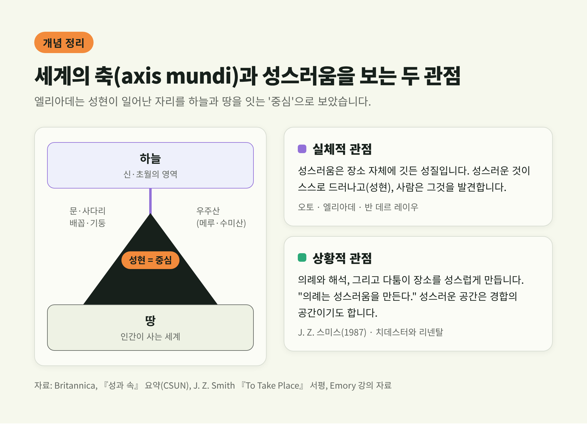
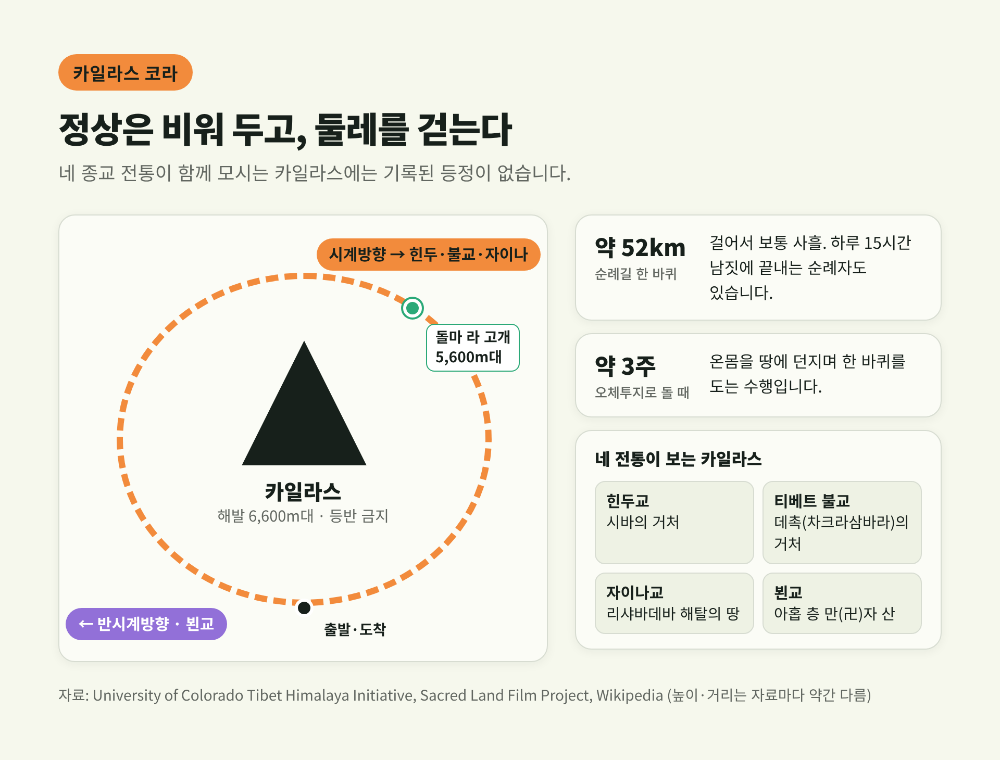
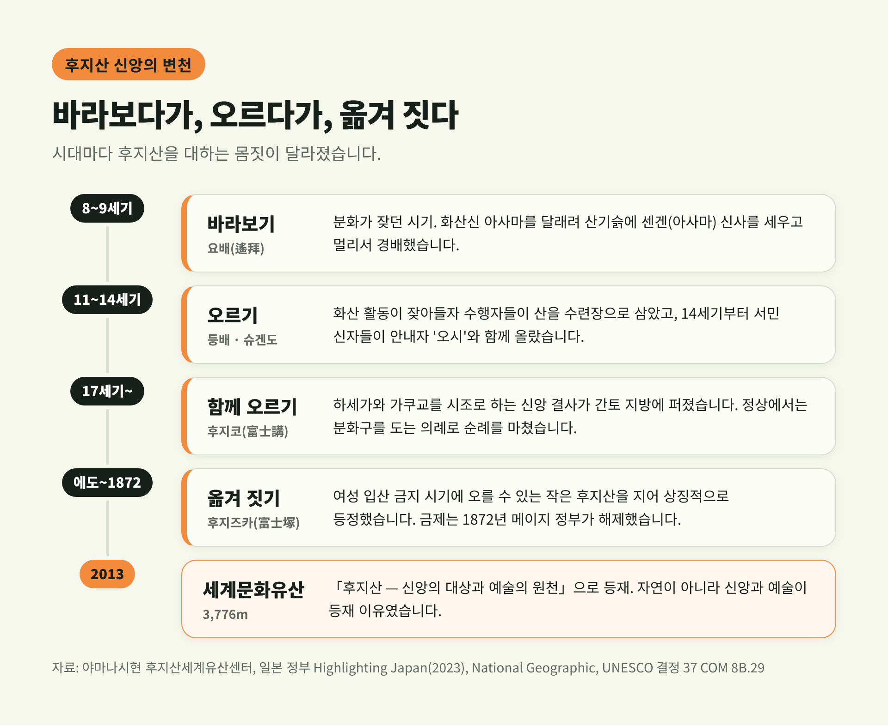
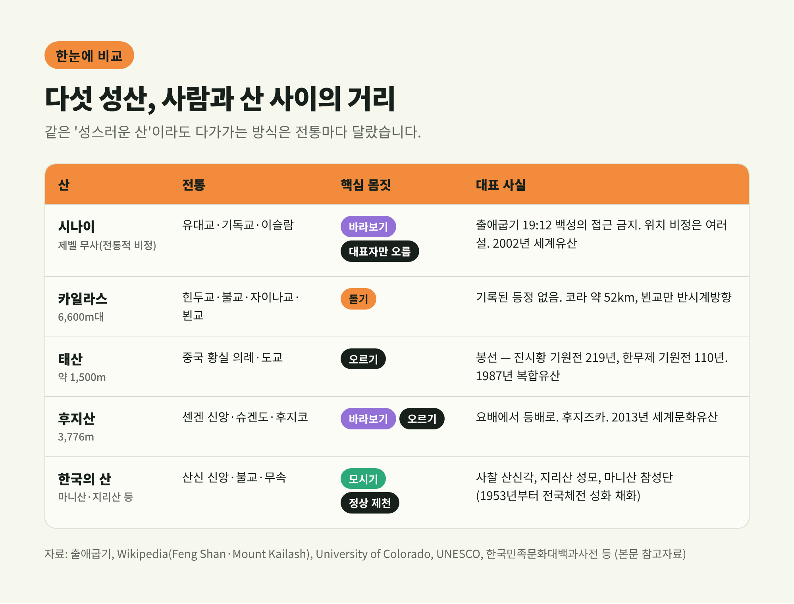

성스러운 산의 비교종교학 — 왜 어떤 산은 오르고 어떤 산은 돌기만 할까

이번 글에서는 여러 종교 전통이 '성스러운 산'을 어떻게 대해 왔는지 비교해 보려 합니다. 시나이, 카일라스, 태산, 후지산, 그리고 한국의 산들이 그 대상입니다. 신앙의 옳고 그름을 따지지 않고, 사람들이 산 앞에서 취한 몸짓만 차분히 살펴보겠습니다.
세 줄 요약
- 종교학자 엘리아데는 성스러운 산을 하늘과 땅을 잇는 '세계의 축'으로 설명했지만, 이 틀이 보편적이냐를 두고 비판도 많습니다.
- 같은 성산이라도 시나이는 다가가지 못하는 산, 카일라스는 둘레를 도는 산, 태산은 황제가 오르던 산, 후지산은 바라보다 오르게 된 산이었습니다.
- 2019년 울루루 등반 금지처럼, 오늘날 성산은 관광·등산과 성스러움 사이의 긴장을 고스란히 보여줍니다.
■ 산이 '성스러워지는' 방식 — 엘리아데와 그 비판
성스러운 산을 이야기할 때 가장 먼저 불려 나오는 이름은 미르체아 엘리아데(1907~1986)입니다. 루마니아 출신으로 시카고대학에서 종교사를 가르친 학자입니다.
그가 쓴 핵심 용어는 두 가지입니다.
첫째, 성현(聖顯, hierophany). 그리스어 '성스러운(hieros)'과 '드러내다(phainein)'를 합친 말입니다. 성스러운 것이 평범한 세계를 뚫고 나타나는 사건을 뜻합니다. 엘리아데는 신의 출현만 가리키는 '신현(theophany)'보다 이 넓은 말을 즐겨 썼습니다.
둘째, 세계의 축(axis mundi). 성현이 일어난 자리는 '중심'이 되고, 그 중심은 하늘과 땅을 잇는 수직의 축이 됩니다. 엘리아데는 신전을 "우주산의 복제"라고 불렀습니다. 땅과 하늘을 잇는 고리라는 뜻입니다. 백과사전들도 성스러운 장소를 하늘과 땅 사이의 '문', '사다리', '배꼽', '기둥'에 빗댑니다.
이 틀은 매력적입니다. 힌두·불교·자이나 우주론의 중심인 메루산(수미산)과, 그 지상 현현으로 여겨지는 카일라스가 꼭 들어맞습니다.
다만 비판도 만만치 않습니다. 조너선 Z. 스미스는 『To Take Place』(1987)에서 '우주적 중심'이 일부 종교에는 있어도 보편적이지는 않다고 반박했습니다. 엘리아데가 근거로 든 호주 원주민 신화 해석이 기독교화된 기록에 기댔다는 지적도 덧붙였습니다. 스미스의 결론은 이렇습니다. 의례는 성스러움에 대한 반응이 아니라, 성스러움을 만들어 낸다.
이후 학계에서는 두 관점이 함께 쓰입니다. 성스러움이 장소 자체에 깃든 성질이라는 실체적 관점, 그리고 사람들의 의례와 해석, 다툼이 장소를 성스럽게 만든다는 상황적 관점입니다. 치데스터와 리넨탈은 성스러운 공간을 "의례의 공간, 의미의 공간, 그리고 경합의 공간"으로 정의했습니다.
이 글은 어느 한쪽을 택하지 않습니다. 두 렌즈를 번갈아 끼우며 산들을 살펴보겠습니다.

■ 시나이산 — 계시의 장소, 경계 밖에서 바라보는 산
시나이는 유대교·기독교·이슬람 세 전통이 모두 기억하는 산입니다. 출애굽기는 이 산을 시나이로, 신명기는 호렙으로 부릅니다. 학자들은 대체로 같은 산으로 봅니다.
흥미로운 점은 이 산이 처음부터 '오르는 산'이 아니었다는 것입니다. 출애굽기 19장 12절은 백성 둘레에 경계를 정하고, 산에 오르거나 그 끝자락을 건드리지 말라고 명합니다. 산을 범하는 자는 죽임을 당한다고까지 적혀 있습니다. 오른 사람은 대표자 모세뿐이었고, 그는 40일 밤낮을 머물며 계명을 받았습니다.
성스러움이 가까움이 아니라 거리로 표현된 셈입니다.
그렇다면 그 산은 어디일까요. 전통적으로는 시나이 반도 남부의 제벨 무사('모세의 산')로 비정합니다. 3세기 무렵 기독교 은수자들이 이곳에 머물렀고, 4세기에 헬레나가 불타는 떨기나무 자리에 예배당을 세웠습니다. 6세기에는 유스티니아누스 황제가 성벽과 바실리카를 지어 오늘날의 성 카타리나 수도원이 되었습니다. 이 일대는 2002년 유네스코 세계유산으로 등재되었습니다.
반면 학계에서 거론된 후보지는 열 곳 가까이 됩니다. 네게브 사막의 하르 카르콤, 사우디아라비아 북서부(이른바 '미디안 가설'), 요르단 페트라 인근 등이 거론됩니다. 고고학적으로는 대규모 집단이 시나이 반도를 건넌 흔적이 확인되지 않았다는 견해가 있습니다. 반대로 신앙 전통은 1,500년 넘게 제벨 무사를 시나이로 기억해 왔습니다.
두 입장은 서로 다른 질문에 답합니다. 하나는 "역사적 사건의 장소는 어디인가"를, 다른 하나는 "공동체가 어디서 그 사건을 기억해 왔는가"를 묻습니다.
오늘날 제벨 무사에는 밤에 올라 일출을 맞는 순례가 관례처럼 자리 잡았습니다. '회개의 계단'이라 불리는 돌계단은 자료에 따라 3,700개에서 4,000개 안팎으로 셉니다. 예전엔 경계 밖에서 바라보던 산이, 지금은 많은 순례자가 오르는 산이 되었습니다.
■ 카일라스 — 네 전통이 공유하는, 아무도 오르지 않은 산
티베트 서부의 카일라스는 해발 6,600m대의 봉우리입니다. 높이는 자료마다 6,638m, 6,714m 등으로 조금씩 다릅니다.
이 산이 특별한 이유는 네 종교 전통이 함께 성산으로 모신다는 데 있습니다.
- 힌두교: 시바 신의 거처입니다.
- 티베트 불교: 탄트라 본존 데촉(차크라삼바라)이 머무는 곳입니다.
- 자이나교: 첫 번째 티르탕카라 리샤바데바가 해탈을 이룬 곳입니다.
- 뵌교: 7세기 불교 전래 이전부터 숭배해 온 '아홉 층 만(卍)자 산'입니다.
인더스, 브라마푸트라, 수틀레지, 카르날리 네 강이 이 일대에서 발원한다는 점도 '세계의 중심' 관념을 뒷받침해 왔습니다.
그런데 카일라스에는 기록된 등정이 없습니다. 1980년대 중반 산악인 라인홀트 메스너는 등반 제안을 받고도 거절했다고 전해집니다. "이 산을 정복한다면 사람들 영혼 속의 무언가를 정복하는 것"이라는 말이 남아 있습니다. 2001년 스페인 원정대의 허가 신청은 국제적 항의 끝에 무산되었고, 현재 중국 당국은 모든 등반을 금지합니다.
대신 순례자들은 산을 돕니다. 티베트어로 '코라'라 부르는 순례길은 약 52km입니다. 가장 높은 돌마 라 고개는 해발 5,600m대입니다. 걸어서는 보통 사흘이 걸리고, 티베트인 가운데는 하루 15시간 남짓에 끝내는 이들도 있습니다. 온몸을 땅에 던지는 오체투지로 돌면 평균 3주가량 걸린다고 합니다.
방향에도 전통의 차이가 담겨 있습니다. 힌두·불교·자이나 순례자는 시계방향으로, 뵌교 순례자는 반시계방향으로 돕니다. 한 산을 두고 네 전통이 서로 다른 의미와 방향으로 걷는 것입니다. 상황적 관점이 말하는 '경합의 공간'이 충돌이 아닌 공존의 형태로 드러나는 장면이라고 생각합니다.

■ 태산 — 오르는 것이 곧 의례였던 산
중국에는 방위를 따라 배치된 다섯 성산, 오악(五嶽)이 있습니다. 동악 태산, 서악 화산, 남악 형산, 북악 항산, 중악 숭산입니다. 땅 위에 그려진 하나의 우주론 지도인 셈입니다. 그중 가장 많은 사람이 찾고 역사적 무게도 가장 큰 산이 해발 약 1,500m의 태산입니다.
태산을 성산으로 만든 핵심 의례는 봉선(封禪)입니다.
- 봉(封): 정상에 흙 제단을 쌓고 하늘에 황제의 공업을 고합니다.
- 선(禪): 산 아래 작은 언덕을 다듬어 땅에 감사합니다.
이 의례를 마친 황제는 하늘의 명, 즉 천명을 받았다고 여겨졌습니다. 기원전 219년 진시황이 천하 통일을 기념해 치른 봉선이 첫 사례로 꼽힙니다. 기원전 110년 한무제는 태산 봉선을 계기로 '원봉(元封)'이라는 연호를 선포했습니다. 이것이 중국 연호의 공식적인 출발점으로 여겨집니다. 정식 봉선은 1008년 송 진종을 끝으로 중단되었습니다.
봉선을 치른 황제 수는 자료에 따라 6명에서 12명까지 다르게 셉니다. 무엇을 기준으로 셌는지는 자료마다 분명히 밝히지 않아, 이 글에서는 두 숫자를 함께 적어 둡니다.
태산은 시나이와 정반대의 산처럼 보입니다. 오르는 행위 자체가 의례이기 때문입니다. 그러나 정상에서 하늘에 고할 수 있는 사람은 오직 천자뿐이었습니다. 성스러움과 정치적 정당성이 산꼭대기에서 겹쳐 있었던 것입니다.
황제가 떠난 자리는 이후 수많은 사람의 참배길이 되었습니다. 등산로의 돌계단은 6천~7천여 개에 이르고, 비석과 마애 석각은 2천 점이 넘는다고 합니다. 태산은 1987년 자연과 문화를 함께 인정받는 복합유산으로 세계유산에 올랐습니다.
■ 후지산 — 바라보다가, 오르다가, 옮겨 지은 산
후지산은 해발 3,776m의 독립 성층화산입니다. 2013년 유네스코는 이 산을 「후지산 — 신앙의 대상과 예술의 원천」이라는 이름으로 세계문화유산에 등재했습니다. 자연유산이 아니라 문화유산이라는 점이 눈에 띕니다. 산을 대하는 사람들의 신앙과 예술이 등재 이유였기 때문입니다.
후지산을 대하는 방식은 시대에 따라 바뀌었습니다.
- 바라보기(요배) — 8~9세기 분화가 잦던 시기에는 산을 멀리서 바라보며 경배했습니다. 화산신 아사마를 달래기 위해 산기슭에 센겐(아사마) 신사를 세웠습니다.
- 오르기(등배) — 11세기 화산 활동이 잦아들자 슈겐도 수행자들이 산을 수련장으로 삼았습니다. 14세기부터는 정토 왕생을 바라는 서민 신자들이 안내자 '오시'의 도움을 받아 올랐습니다.
- 함께 오르기(후지코) — 17세기 하세가와 가쿠교를 시조로 하는 신앙 결사 후지코가 간토 지방에 퍼졌습니다. 순례자들은 긴 지팡이를 들고 산기슭 센겐 신사에서 출발해, 정상의 분화구를 도는 의례로 순례를 마쳤습니다.
- 옮겨 짓기(후지즈카) — 에도 시대에는 여성의 입산이 금지되었습니다. 그러자 사람들은 오를 수 있는 작은 후지산, 후지즈카를 지어 상징적으로 등정했습니다. 여성 금제는 1872년 메이지 정부가 풀었습니다.
후지산은 바라보는 산과 오르는 산, 그리고 집 가까이에 다시 지은 산이 한 몸에 겹쳐 있는 사례입니다. 가쓰시카 호쿠사이의 『후가쿠 36경』이 서양 미술에까지 영향을 미치며, 후지산은 '바라보는 산'으로서도 세계적 상징이 되었습니다.

■ 한국의 산 — 정상보다 산자락에 모신 산신
한국의 성산 문화는 앞의 사례들과 결이 조금 다릅니다.
한국민족문화대백과사전은 단군신화의 태백산과 신단수를 산악신앙의 원초적 형태로 봅니다. 하늘의 신이 내려오는 산이라는 점에서 엘리아데의 '세계의 축'과도 닮았습니다. 『삼국유사』는 단군이 훗날 아사달에 돌아와 숨어 산신이 되었고, 그때 나이가 1,908세였다고 전합니다. 나라를 연 인물이 산의 신이 되었다는 서사입니다.
이후 산신은 공동체를 지키는 존재로 자리 잡았습니다. 신라는 삼산에 대사, 오악에 중사, 스물네 곳의 산에 소사를 지냈습니다. 흰 수염 노인과 호랑이로 그려지는 산신은 불교에도 받아들여져, 많은 사찰에 산신각이나 삼성각이 들어섰습니다. 마을 뒷산의 산신단에서는 정초부터 대보름 무렵 산신제를 지냈습니다.
산신이 늘 남성이었던 것은 아닙니다. 지리산의 산신은 '성모(聖母)'라 불린 여신입니다. 천왕봉 성모사에 성모상이 모셔졌고, 고려 태조의 어머니라는 전승과 무속 신앙이 얽혀 있습니다. 불교·무속·산신 신앙이 한 산에서 섞인 사례입니다.
정상에 제단을 둔 곳도 있습니다. 강화도 마니산(해발 470m 안팎) 꼭대기의 참성단은 단군이 하늘에 제를 올리려 쌓았다는 전승을 지닙니다. 고려·조선 시대에도 제천이 이어졌고, 1639년과 1700년에 고쳐 쌓은 기록이 있습니다. 둥근 기단 위에 네모난 단을 올린 형태이며, 1953년부터 전국체육대회 성화를 이곳에서 채화합니다.
백두산은 조금 다른 이야기를 들려줍니다. 한 연구(동아시아문화연구, 2013)에 따르면, 고려·조선에서 백두산은 주로 국토 산천의 근원이라는 지리적 상징이었습니다. 1908년 신채호가 단군신화의 태백산을 백두산으로 보는 주장을 폈고, 1909년 창시된 단군교(이듬해 대종교)가 이를 확산시켰습니다. 1920~30년대 신문의 탐사와 강연을 거치며 '민족의 영산'이라는 표현이 퍼졌습니다. 흥미롭게도 당시 신문은 일본의 후지산 담론을 빌려 이 표현을 다듬었다고 합니다.
이 연구는 이전 시대의 숭배를 부정하지 않습니다. 다만 성스러움의 의미가 시대에 따라 새로 덧입혀진다는 점을 보여줍니다. 상황적 관점이 잘 들어맞는 대목입니다.

■ 오르기, 돌기, 바라보기 — 몸짓이 말해 주는 것
지금까지의 산들을 몸짓으로 다시 정리하면 이렇습니다.
- 오르기: 태산의 봉선, 후지코의 등배처럼 정상을 향해 가는 길 자체가 수행이자 의례가 됩니다. 다만 정상은 흔히 특정한 사람에게만 허락되었습니다.
- 돌기: 카일라스의 코라처럼 중심을 비워 두고 둘레를 걷습니다. 정상을 밟지 않는 것이 곧 경의의 표현입니다.
- 바라보기: 시나이의 경계, 후지산의 요배처럼 거리를 두는 방식입니다. 가까이 가지 않음으로써 성스러움을 지킵니다.
- 모시기: 한국의 산신각처럼 산의 신을 산자락이나 마을 가까이에 모셔 두고 섬기는 방식입니다.
같은 '성산'이라도 사람과 산 사이의 거리는 이렇게 다릅니다. 엘리아데의 말대로 산이 하늘과 땅을 잇는 축이라 해도, 그 축에 다가가는 방법은 공동체마다 달랐습니다. 그리고 그 방법이 바로 산을 성스럽게 유지하는 의례였습니다.
■ 관광과 등산의 시대, 성스러움은 어디에 서 있나
오늘날 성산은 동시에 관광지이자 등산 명소입니다. 여기서 긴장이 생깁니다.
가장 상징적인 사례는 호주의 울루루입니다. 주변 평원에서 348m 솟은 이 바위는 원주민 아난구에게 성스러운 장소입니다. 1985년 소유권이 아난구에게 반환된 뒤에도 등반은 이어졌습니다. 당시 아난구 대변인은 사람들이 오르는 것을 "좋아하지 않지만" 당분간 허용한다고 말했습니다. 1990년대에는 등반로 입구에 "오르지 말아 주세요"라는 표지가 섰습니다.
결국 국립공원 이사회는 2017년 11월 만장일치로 등반 폐쇄를 결정했습니다. 등반은 2019년 10월 26일, 반환 34주년에 맞춰 영구히 닫혔습니다. 등반 방문객 비율이 20% 아래로 떨어지면 폐쇄를 검토한다는 기준이 미리 있었습니다. 보도에 따르면 그동안 등반 중 30명이 목숨을 잃었습니다. 전 이사장은 폐쇄를 두고 "속상해할 일이 아니라 축하할 일"이라고 말했습니다.
후지산은 다른 길을 택했습니다. 오르는 것을 막지 않되 관리하는 방식입니다. 2025년부터 야마나시·시즈오카 양쪽의 주요 등산로 네 곳에서 1인 4,000엔의 입산료를 받습니다. 야마나시 쪽 요시다 등산로는 하루 4,000명으로 인원을 제한하고, 오후 2시부터 이튿날 새벽 3시까지 5합목 게이트를 닫습니다.
카일라스는 정상을 닫고 둘레를 열어 둔 경우입니다. 시나이는 수도원과 순례 전통 위에 관광이 더해진 경우입니다.
어느 방식이 옳다고 단정하기는 어렵습니다. 등산을 자연을 누릴 권리로 보는 시각도 있고, 원주민과 신앙 공동체의 자기결정을 우선해야 한다는 시각도 있습니다. 다만 분명한 것은, 오늘날의 논쟁 역시 '이 산을 어떻게 대할 것인가'라는 오래된 질문의 연장선에 있다는 점입니다.
정리하면 이렇습니다. 성스러운 산은 높이나 모양이 아니라, 사람들이 그 앞에서 취해 온 몸짓으로 드러납니다. 오르든, 돌든, 바라보든, 그 몸짓에는 각 공동체가 생각한 '하늘과 땅의 거리'가 담겨 있습니다.
"성스러운 산은 정상이 아니라 다가가는 방식에서 완성된다."
다음에 어떤 산 앞에 서게 된다면, 오를지 말지보다 먼저 그 산이 어떻게 대해져 왔는지 한 번 물어보시길 권합니다. 그 질문만으로도 산은 조금 다르게 보일 것입니다.
참고자료
- Britannica — Mircea Eliade
- Britannica — Sacred: Dimensions of the sacred
- Wikipedia — Hierophany
- CSUN — A Synopsis of Eliade's The Sacred and the Profane
- Dreamflesh — Cosmic Mountain
- Theopolis Institute — J. Z. Smith, To Take Place 서평
- Emory University — American Sacred Space
- Wikipedia — Mount Sinai (Bible)
- Biblical Archaeology Society — Searching for Biblical Mt. Sinai
- BibleHub — Exodus 19:12
- WorldHeritageSite.org — Saint Catherine Area
- Sacred Land Film Project — Mount Sinai
- Sacred Land Film Project — Mount Kailash
- Wikipedia — Mount Kailash
- University of Colorado — Circumambulation of Mount Kailash
- Sacred Destinations — Mount Kailash
- Pilgrimaps — The Five Sacred Mountains of China
- New World Encyclopedia — Mount Tai
- Wikipedia — Feng Shan
- China Daily — 'Fengshan Sacrifices' at Mount Tai
- China Daily — A mountain that scales China's history
- UNESCO — Fujisan, sacred place and source of artistic inspiration
- UNESCO — Decision 37 COM 8B.29
- 야마나시현 후지산세계유산센터
- Highlighting Japan (일본 정부) — Mt. Fuji
- National Geographic — The first woman to climb Mount Fuji
- 후지산 등산 공식 사이트 FAQ
- Time Out Tokyo — Mt Fuji 2025 climbing fee
- 한국민족문화대백과사전 — 산악숭배
- 한국민족문화대백과사전 — 단군
- 한국민족문화대백과사전 — 지리산 성모
- 한국민족문화대백과사전 — 성모
- 한국민족문화대백과사전 — 마니산
- Wikipedia — Mountain God (Korean Sansin)
- 동아시아문화연구 55집(2013) — 백두산 '민족의 영산' 담론
- Parks Australia — Uluru climb closure
- NPR — Australia's iconic red rock will be off limits to climbers
- Britannica — Uluru/Ayers Rock